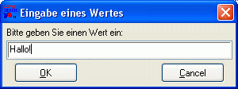

INPUTBOX, PWDBOX
INPUTBOX, PWDBOX
INPUTBOX, PWDBOX
INPUTBOX, PWDBOX
| Syntax: | INPUTBOX Eingabe = Titel, Eingabeaufforderung, Default-Wert PWDBOX Eingabe = Titel, Eingabeaufforderung, Default-Wert |
| Beschreibung: | INPUTBOX zeigt einen einfachen Dialog zur Eingabe eines Wertes an. Die Funktion erwartet einen Dialogtitel, einen Eingabeaufforderungstext sowie einen Default-Wert, der im Eingabefeld vorgeblendet wird. Wenn der OK-Button im Dialog gedrückt wurde, ist der Rückgabewert der Wert bzw. Text, der im Eingabefeld eingegeben wurde. Wird der CANCEL-Button gedrückt, so liefert die Funktion einen Leerstring zurück. PWDBOX ist eine Abwandlung von INPUTBOX zur maskierten Eingabe von Werten, z.B. Passwörtern (PWDBOX = Password-Box).  |
| Beispiele: | rem Einfache Abfrage mittels INPUTBOX inputbox [name] = 'Dein Name', 'Wie heiflt du?', 'Anonymous' echo 'Hallo, ' # [name] rem Passwortabfrage mittels PWDBOX pwdbox [passwort] = 'Passwort', 'Bitte geben Sie Ihr Passwort ein:', '' if [passwort] = '' echo 'Fehler, kein Passwort eingegeben.' else echo 'Dankeschön, Ihr Passwort lautet: ' # [passwort] endif |
| Bemerkungen: | Die Beschriftung der Buttons OK und CANCEL kann über die Variablen [InputBox_Ok] und [InputBox_Cancel] gesetzt werden. Dies trifft dann auch auf die PWDBOX zu, da diese den selben Dialog, allerdings mit einem anderen Eingabefeld, verwendet. Wird die Beschriftung der Buttons auf einen Leerstring gesetzt, wird der Button aus dem Dialog ausgeblendet. Die Position des Dialogs kann mit Hilfe der Variablen [InputBox_X] und [InputBox_Y] verändert werden. Hat [InputBox_X] und/oder [InputBox_Y] den Wert 0 wird der Dialog automatisch jeweils horizontal oder vertikal zentriert (dies ist die Standard-Einstellung). Die Angabe bei Positionierungswerten erfolgt jeweils in Pixeln. Die Gröfle von INPUTBOX/PWDBOX ist prinzipiell nicht veränderbar. Das Dialog-Icon kann global für alle Dialoge über die Variable [app_icon] auf eine externe .ICO-Datei gesetzt werden. |